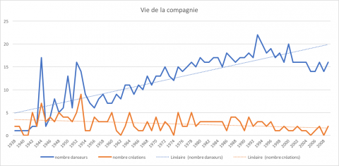
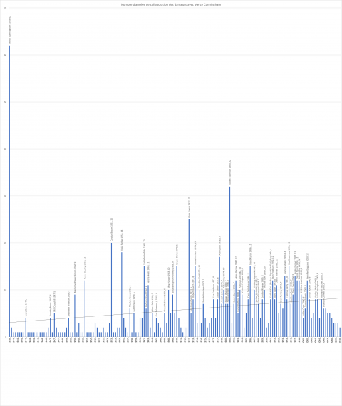
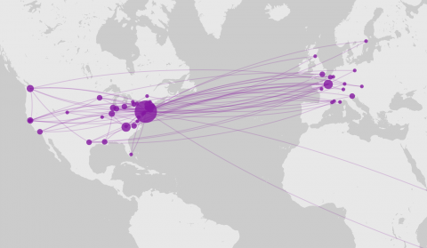
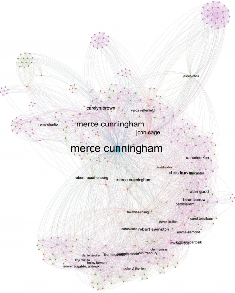
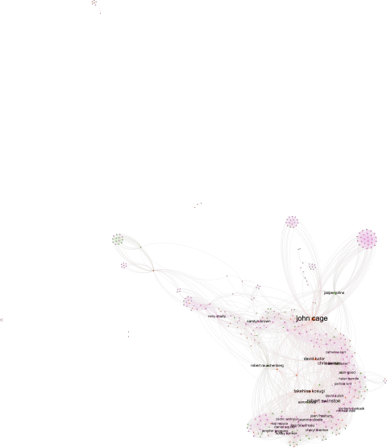
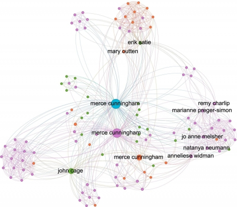
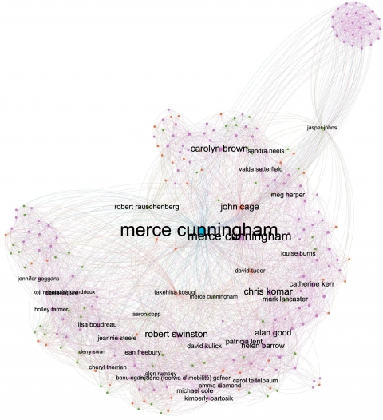
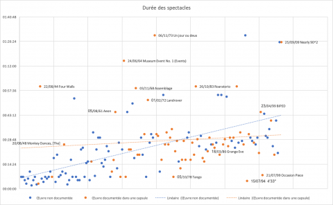
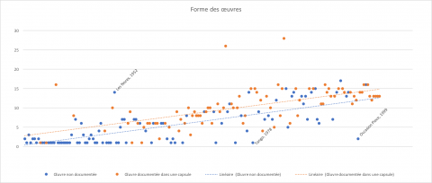

1« Mesurer Merce Cunningham » s’inscrit dans un questionnement plus large sur les Theatre Analytics,
soit l’analyse des arts de la scène basée sur les données (Bardiot
2017). Art par essence éphémère, sans objet pérenne, les arts de la
scène ne subsistent que dans les souvenirs des spectateurs, dans les
actualités culturelles ou encore dans les collections publiques ou
privées sous forme de documents, d’archives. Ces dernières sont
extrêmement diverses : programmes, photographies, films, carnets de
notes, correspondances, mais aussi costumes, fragments de
scénographies, documents et matériels techniques, marionnettes… À la
fragilité des spectacles s’oppose le patrimoine architectural et
littéraire : le théâtre, l’opéra, le cirque sont aussi des lieux
structurant l’urbanisme de nos villes ainsi que des écritures (le texte,
la partition) qui ont pour vocation de perdurer par-delà les
représentations, par-delà les écritures de plateau. Comme si la
pérennité de la pierre et de la lettre devait compenser, pouvait
conjurer, la fugacité de la représentation. Dans les traces qui nous
restent des spectacles, quelles données pouvons-nous collecter et
analyser afin d’en retracer l’histoire et d’en mener l’analyse
esthétique ? Autrement dit, quelles sont les données des arts de la
scène ? Ou encore : comment la transformation des traces en
données permet-elle de renouveler l’analyse historique et esthétique des
arts de la scène ?
2Si
je mène différentes expérimentations, notamment sur les traces
numériques des processus de création avec le logiciel Rekall, j’ai
souhaité m’intéresser à un jeu de données a priori
« assez » simple et accessible : celui des distributions
des spectacles, issu d’une trace documentaire en général bien archivée,
soit les programmes des théâtres. La nuance est de mise : en effet,
il n’existe pas à l’heure actuelle un modèle unique ou un standard
universel pour décrire les distributions des spectacles (Bollen
2016) ; les programmes imprimés parfois plusieurs mois en amont
d’une création sont souvent source d’erreurs liées à des changements en
cours de production. Les programmes de salles sont une source beaucoup
plus fiable mais moins bien archivée.
- 1 Les étudiants ont travaillé en groupe sur ce même corpus de données afin de conduire un projet d’an (...)
3Afin
de mener un premier essai d’analyse informatique sur des données issues
des programmes de spectacles, j’ai choisi d’examiner la carrière et
l’œuvre de Merce Cunningham. D’une part, j’avais eu l’occasion d’étudier
certaines de ses œuvres dans le cadre de mes recherches sur les digital performances
et de consulter les archives de la compagnie à la New York Public
Library. D’autre part, comme on le verra plus loin, les données étaient
déjà accessibles et fiables, ce qui facilitait le projet. Enfin,
M. Cunningham étant un chorégraphe majeur dans l’histoire de la
danse contemporaine, cela me semblait une étude de cas pertinente à
conduire dans le cadre d’un cours d’initiation aux humanités numériques
avec mes étudiants en master 1 Art à l’université polytechnique des
Hauts-de-France1.
4Merce Cunningham, né en 1919, est l’un des plus grands chorégraphes du xxe
siècle. D’une longévité exceptionnelle, sa carrière s’étend sur sept
décennies, de sa première création en 1938 à sa mort en 2009. Sa
préoccupation constante pour l’innovation est volontiers soulignée par
les historiens des arts de la scène, qu’il s’agisse de la révision des
relations entre la musique et la danse, de la collaboration avec des
plasticiens, de l’utilisation du hasard dans la composition
chorégraphique ou encore de l’intégration des technologies numériques
dans le processus de création. L’influence du chorégraphe américain est
déterminante sur la danse contemporaine, à la fois d’un point de vue
esthétique et d’un point de vue pédagogique. Plusieurs de ses œuvres
sont au répertoire des compagnies de danse et des ballets les plus
prestigieux. Dans le cadre de ses cours, il forme de nombreux danseurs
qui deviennent par la suite des chorégraphes de renom, à commencer par
les membres de la Judson Church.
5Au
crépuscule de sa vie, en 2000, M. Cunningham décide d’organiser le
legs et la préservation de son œuvre au travers de la création d’une
fondation – le Merce Cunningham Trust – tout en exigeant la dissolution
de sa compagnie deux ans après sa mort. La mission du Merce Cunningham
Trust, d’après son site Internet, est de « préserver, enrichir et
maintenir l’intégrité de l’œuvre chorégraphique ainsi que des autres
réalisations, et de les rendre accessibles au public ». Cette
démarche est inédite à plusieurs titres. D’une part, elle témoigne d’un
souci et d’un effort de documentation précoce, régulier et
intense : David Vaughan est engagé en qualité d’archiviste par la
compagnie dès 1976 (auparavant, collaborateur de la compagnie depuis
1959 à divers postes d’administration et de production, il collecte les
documents de manière informelle). Depuis, les archives de la compagnie
ont été transmises à la Jerome Robbins Dance Division de la New York
Public Library en deux phases principales, en 2001 puis en 2012. D’autre
part, cette démarche remet en cause le caractère éphémère du spectacle
vivant : 86 œuvres (sur les 183 dénombrées), documentées dans
des Dance Capsules, doivent grâce aux archives réunies et mises à disposition du public sur Internet2,
pouvoir « être jouées indéfiniment » (« Merce Cunningham
Dance Capsules » s. d.). La compagnie n’est pas l’héritière
du répertoire. Au contraire, la fondation promeut une dissémination des
œuvres la plus large possible : toute personne souhaitant remonter
une pièce de Cunningham en a la possibilité, sous réserve de l’accord du
Merce Cunningham Trust. Ce faisant, les Dance Capsules
définissent deux groupes d’œuvres : les œuvres majeures, objet
d’une documentation approfondie et vouées à la transmission ; les
œuvres mineures, dont la documentation n’est pas mise à disposition du
public et la reprise de facto quasiment impossible à mener.
6L’un des apports principaux de Cunningham est de sortir la danse de toute référence narrative ou psychologique. Pour lui, la danse est un fait :
What is seen, is what it is. (Cunningham 1952)
Cette vision de la
danse résonne aujourd’hui comme un appel à appliquer des méthodologies
quantitatives à l’analyse de son œuvre. Il n’y a qu’un pas à considérer
les faits comme des données, et ainsi pouvoir « mesurer
Cunningham » grâce à une approche empruntée aux humanités
numériques.
- 3 Les graphiques imprimés sont souvent peu lisibles. Nous les avons donc mis à disposition sous forma (...)
7Qui
dit mesure dit instrument de mesure. J’en ai utilisé plusieurs, non pas
pour faire étalage de la diversité des outils à disposition du
chercheur, mais parce que différents instruments de mesure permettent
d’analyser via des représentations variées différents phénomènes, et ce à
partir des mêmes données. Il est possible de distinguer deux grandes
familles d’instruments : ceux qui reposent sur une approche
quantifiable comme la statistique avec des mesures exprimées en valeurs
numériques (le nombre de danseurs, le nombre de documents, le nombre
d’années passées dans la compagnie) ; ceux qui reposent sur une
approche codifiable où ce qui importe est bien plus le lien entre les
données (le réseau de relation entre les membres de la compagnie) que
leur numération. Autrement dit, dans cette seconde approche, il importe
davantage de savoir avec quels danseurs Cunningham a collaboré
de 1953 à 2009 que l’évolution statistique de leur nombre. La métrique
n’est pas ici posée d’emblée : elle se réinvente en quelque sorte à
chaque image, en fonction des algorithmes, des paramètres et de
différentes variables qui ont permis de la constituer, d’où la
difficulté d’interprétation des résultats. Les trois principaux
instruments retenus pour mener une analyse exploratoire des données
Cunningham sont les suivants : Gephi, pour la représentation des
réseaux ; Palladio, pour la représentation géographique et
temporelle ; des tableurs (Excel, OpenOffice, Datamatic), pour des
représentations statistiques3.
Tous ont en commun de générer des images, plus souvent appelées
« visualisations de données ». Intrinsèquement qualitatives,
suscitant un déplacement du regard du chercheur sur son corpus, elles
sont le point de départ de notre analyse, d’où la place qui leur est
accordée dans les pages qui suivent. Pour Franco Moretti,
les images sont premières : en effet, en offrant une visualisation des résultats empiriques, elles constituent l’objet d’étude même de la critique computationnelle. (Moretti 2016, 10)
Si les images sont
premières, elles ne le sont que parce qu’elles sont vues par un regard
éduqué et informé qui contribue à leur morphogenèse. Impossible de les
fabriquer et encore moins de les « lire », de sortir de
l’évidence et d’y repérer les anomalies sans connaissance préalable du
contexte, sans expertise de l’objet étudié. Nous appliquerons, après
avoir présenté les données sur lesquelles nous nous appuyons, la méthode
éditoriale proposée par F. Moretti (Moretti 2016), à savoir une
articulation entre images (visualisations de données), légendes
(descriptions, observations), textes (analyse, synthèse) et notes de bas
de page (références, spéculations).
8Les
données réunies proviennent du site Internet du Merce Cunningham Trust.
Elles concernent la distribution des spectacles, les Dance Capsules ainsi que la vie de la compagnie.
9Concernant
la distribution, pour chacun des 183 spectacles sont détaillés les
noms des danseurs, des compositeurs, des créateurs lumières, des
costumiers et des scénographes, le titre de la composition musicale, la
date et le lieu de création, la durée du spectacle, le lien le cas
échéant vers une Dance Capsule. L’ensemble est complété par un
bref texte descriptif. Je me suis également appuyée sur la liste des
danseurs établie par le Merce Cunningham Trust, laquelle mentionne les
dates d’entrée et de départ de la compagnie pour chacun d’entre eux4.
10La
source unique des données – le Merce Cunningham Trust – leur confère
une grande fiabilité et homogénéité. Celles-ci prennent en compte la
totalité des œuvres, et non pas seulement les œuvres majeures.
Cependant, elles sont loin d’être exhaustives. Elles ne comprennent pas
les quelque 700 Events créés par la compagnie depuis le premier Event
en 1964, ni la transmission des chorégraphies à d’autres compagnies ou
corps de ballets, et se limitent à la distribution de chaque première.
Or les œuvres ont souvent été interprétées par d’autres danseurs et fait
l’objet de reprises. Par ailleurs, ces données, vraisemblablement
extraites de programmes de salles, sont très parcellaires : ont
disparu les informations relatives à la production (les régisseurs, les
administrateurs et autres métiers de l’ombre), à la présentation des
œuvres (textes, photographies, autres documents publiés dans les
programmes de salles) et au graphisme du document original (typographie,
mise en page, proportion du visuel par rapport au texte, etc.). Il
faut lire les pages qui suivent comme la première étape d’un work in progress, avec un premier échantillon de données. Ce travail est appelé à se poursuivre avec des données plus riches et plus complexes.
- 5 Cet ouvrage avait auparavant fait l’objet d’une édition papier : (Vaughan 1997a), traduit en frança (...)
11Les
données ont été renseignées dans un tableur, avec quelques mesures de
« nettoyage » nécessaires, par exemple pour les noms de
personnes (graphie, noms de jeune fille et d’épouse). Une autre source a
permis de vérifier quelques points de détails : l’ouvrage de David
Vaughan, Merce Cunningham, 65 Years, publié sous format
numérique. Cette véritable somme retrace en détail le parcours de
Cunningham, œuvre après œuvre. Figurent également les écrits majeurs du
chorégraphe ainsi que de très nombreux documents visuels, dont des
extraits vidéo (Vaughan 2012)5.
- 6 Les Dance Capsules permettent également de s’interroger sur les stratégies de documentation mises e (...)
12Malgré les restrictions énoncées ci-dessus, le jeu de données réuni comprend 183 créations réparties de 1938 à 2009, dont 86 Dance Capsules,
et 338 personnes différentes. Les données réunies regroupent trois
grandes catégories : les données relatives aux personnes, aux
œuvres et à la documentation. À partir de ces éléments, pouvons-nous
identifier des traits typiques, des caractéristiques propres à
l’histoire et la vie de la compagnie ainsi qu’à l’esthétique de
Cunningham6 ?
13Dans
un premier temps, considérons les données liées à la distribution des
œuvres ainsi qu’aux engagements des danseurs de la compagnie.
Peuvent-elles mener à l’identification de marqueurs historiques et au
repérage de motifs récurrents ou se différenciant selon les
périodes ? Pour commencer, établissons deux visions d’ensemble –
temporelle et spatiale – de la vie de la compagnie.
14Le
diagramme chronologique (figure 1) présente l’évolution du nombre
des créations ainsi que celle du nombre de danseurs par année. Cette
représentation fait apparaître différentes caractéristiques du parcours
de Cunningham. La première est une très grande créativité, et ceci tout
au long de la carrière du chorégraphe. Cependant, la ligne orange
présentant l’évolution du nombre de créations est loin de montrer un
long fleuve tranquille. Des périodes d’intense créativité succèdent ou
précèdent des périodes moins prolixes. Trois périodes sont
identifiables. Le début, de 1938 à 1953, est marqué par de très
nombreuses créations, jusqu’à neuf en 1953, année de naissance de la
compagnie. Comme nous le verrons plus loin, il s’agit de nombreux soli
de courte durée, chorégraphiés et interprétés par M. Cunningham. À
l’autre extrémité, à partir de 1997, les créations sont plus
sporadiques : ces années sont celles des grandes et nombreuses
tournées à l’étranger avec la présentation du répertoire et sa
transmission. Entre ces deux pôles (avant 1953 et après 1997), la vie de
la compagnie est marquée par des pics de créativité, parfois jusqu’à
cinq nouvelles créations par an.
15En
71 ans, seules six années ne comprennent pas de nouveau spectacle, en
début et en fin de parcours, ainsi qu’en 1962 et en 1974. La
consultation du livre de D. Vaughan (Vaughan 2012)
pour ces différentes années permet d’obtenir les précisions
suivantes : 1940 et 1941 sont les années où M. Cunningham est
danseur dans la compagnie de Martha Graham et où il suit en même temps
les cours de la School of American Ballet – une période d’apprentissage,
avec de nombreux engagements, peu propice à la création personnelle.
D’après D. Vaughan, 1962 correspond à la période des happenings et
des performances de la Judson Church. Si Cunningham collabore à
certaines de ces manifestations, leur caractère
« inclassable » fait qu’elles ne sont pas créditées comme des
pièces chorégraphiques en tant que telles. 1974 est une année marquée
par la réalisation de plusieurs Events et surtout par l’exploration de la chorégraphie pour caméra, qui aboutira à la réalisation d’une création pour la vidéo, Wesbeth,
en collaboration avec Charles Atlas. Achevée à l’automne 1974, elle est
présentée au public en février 1975 (elle est donc
« comptée » en 1975). 2005 et 2008 sont deux années à l’agenda
particulièrement chargé en termes de tournées et reconnaissances
internationales.
Figure 1. Données sur la vie de la compagnie de Merce Cunningham, de 1938 à 2009

En bleu, le nombre
de danseurs dans la compagnie ; en orange le nombre de
créations ; en pointillé, les courbes de tendance correspondantes
Données compilées à partir du site https://www.mercecunningham.org ; réalisation : Clarisse Bardiot
- 7 Ces différents épisodes sont narrés avec de nombreuses anecdotes dans l’autobiographie de Carolyn B (...)
16La
seconde caractéristique du parcours de Cunningham est la corrélation
entre les marqueurs historiques du nombre de créations et ceux du nombre
de danseurs dans la compagnie. Non seulement les nombres de créations
et de danseurs augmentent en général simultanément, mais les indices de
rupture sont identiques. Concernant l’évolution du nombre de danseurs
dans la compagnie, la période avant 1953 est marquée par de très grandes
disparités : les quatre premières années, M. Cunningham est
seul, par la suite les toutes premières pièces de groupe en 1944, 1947,
1950 et 1952 entraînent des « pics » relatifs au nombre de
danseurs, jusqu’à en totaliser dix-sept en 1944. Paradoxalement, la
création de la compagnie, avec 14 danseurs, en 1953, est marquée
par une chute libre, jusqu’à six danseurs en 1956. Les premières années
sont économiquement très fragiles, les invitations pour des
représentations, difficiles à obtenir et plusieurs interprètes décident
de quitter la compagnie devant l’absence de perspective stable. Les
années 1960 sont une décennie de construction fondamentale, avec les
premières tournées en Europe7.
À partir de 1967, la compagnie ne sera plus jamais en dessous de dix
danseurs, et en 1976 en dessous de quatorze danseurs. En constante
augmentation, elle atteint vingt-deux danseurs en 1993, avant de
décroître. De 1953 à 2009, la compagnie a ainsi compté en moyenne
quatorze danseurs, soit le même chiffre qu’au moment de sa création.
- 8 Examiner de manière précise ce phénomène demande des données supplémentaires que nous n’avons pas e (...)
17La
troisième caractéristique de l’évolution de la compagnie est une
augmentation constante du nombre de danseurs, alors que le nombre de
créations a tendance à décroître. L’inversion des courbes de tendance
amène à formuler l’hypothèse suivante : plus on avance dans le
temps, et plus l’activité principale devient la diffusion du répertoire,
au détriment de la création8.
18Quelle
est la carrière des danseurs dans la compagnie ? La figure 2
présente la durée de la collaboration de chaque danseur avec
M. Cunningham, en fonction de la date de son entrée dans la
compagnie. Un calcul de la moyenne nous apprend que chaque danseur reste
5 ans et demi. Ce chiffre recouvre de grandes disparités : de
nombreux danseurs, jusqu’en 1960, ne restent qu’une seule année. Quatre
« fidèles » accompagnent alors Cunningham : Marianne
Preger-Simon, Remy Charlip, Viola Farber et Carolyn Brown.
19Après
1960, les engagements sont de plus en plus pérennes, comme le montre la
courbe de tendance, avec certains exemples d’une longévité
exceptionnelle : Robert Swinston (32 ans), Chris Komar
(25 ans), Carolyn Brown (20 ans), Viola Farber (18 ans),
Alan Good (17 ans), Lisa Boudreau (15 ans). Si
M. Cunningham danse lui-même jusqu’en 1999, à l’âge de 80 ans,
et totalise en tant que danseur 120 créations, il n’est pas le
seul garant de la continuité au sein de la compagnie. Régulièrement, par
cycle d’environ sept années, un ou deux danseurs recrutés s’engagent
dans la compagnie pour au moins treize ans. De par leur longévité et
leur implication dans les créations, ils permettent de faire le lien
entre différentes générations, mais aussi entre les danseurs de passage
et les danseurs stables. Ce rôle central sera reconnu : une fois sa
carrière de danseur achevée, C. Komar demeure employé dans la
compagnie en tant qu’assistant de M. Cunningham. R. Swinston
occupe également cette fonction à partir de 1992 (il est entré en 1980),
en parallèle de son rôle de danseur dans la compagnie.
Figure 2. Durée de la carrière des danseurs dans la compagnie

Nombre d’années
passées dans la compagnie en fonction de la date d’arrivée et de départ
de chaque danseur. Ces données ne se basent pas sur la participation aux
premières mais sur l’ensemble de la carrière de chaque danseur au sein
de la compagnie et sont issues du fichier « danseurs ».
Données compilées à partir du site https://www.mercecunningham.org ; réalisation : Clarisse Bardiot
- 9 Cette visualisation ne prend pas en compte les tournées avec des pièces de répertoire.
20Après
une vision chronologique dans les deux premières figures, la
figure 3 expose une représentation géographique de la vie de la
compagnie. Elle synthétise l’ensemble des déplacements effectués par
M. Cunningham de 1938 à 2009 pour les créations9.
L’enchevêtrement des lignes montre une très grande densité des échanges
de part et d’autre de l’Atlantique, avec deux pôles d’attraction
majeurs : New York, où M. Cunningham s’installe en 1939, et la
France, où il présente une première pièce dès 1949 et dont le rôle est
crucial pour sa reconnaissance internationale. Pourtant, c’est en Suède
que la compagnie en tant que telle fait ses débuts européens, en 1958.
Elle ne se produit dans l’Hexagone pour une création qu’en 1966 (Place
à la fondation Maeght). Par la suite, plusieurs institutions françaises
(le Théâtre de la Ville, le Théâtre des Champs-Éysées, l’Opéra national
de Paris, le Festival d’Avignon…) invitent régulièrement Cunningham à
créer de nouvelles œuvres. Le rôle de la France dans sa carrière est
marqué par sa seule création en dehors de la compagnie, celle d’Un jour ou deux, pièce
pour 26 danseurs de l’Opéra de Paris en 1973, commandée par le
Festival d’automne et le Festival international de danse de Paris.
Figure 3. Représentation cartographique des déplacements de la compagnie

Cette représentation ne prend en compte que les créations. Ne figurent pas les tournées avec les pièces du répertoire et les Events. Visualisation réalisée avec Palladio.
Données compilées à partir du site https://www.mercecunningham.org ; réalisation : Clarisse Bardiot
21Cette
première exploration des données permet de faire surgir quelques
marqueurs historiques dans la carrière de Cunningham, en reliant
représentations visuelles et éléments biographiques : 1953 et la
création de la compagnie, 1974 avec l’exploration de la vidéo, la fin
des années 1990 et les années 2000 privilégiant l’exploitation du
répertoire sur la création, l’importance des échanges avec l’Europe…
Chaque saillance visuelle devient un indice qui suscite une
interrogation : pourquoi ces pauses dans la création ?
Pourquoi cette rupture en 1953 ? L’ouvrage détaillé, année par
année, de D. Vaughan se révèle une aide extrêmement
précieuse : il permet d’expliciter les phénomènes observés, dans un
aller-retour constant entre la vue d’ensemble et la vue de détail,
entre le macro et le micro. La petite mécanique des humanités
numériques, alternant mesure quantitative et interprétation qualitative,
se met en place d’entrée de jeu.
22On
est pourtant en droit de s’interroger : qu’apporte cette analyse
statistique puisqu’au final les informations sont déjà publiées dans un
ouvrage somptueusement illustré ? D’une part, elle permet de
montrer que ces visualisations, malgré des données restreintes, ne se
« trompent » pas. Elles corroborent des faits déjà connus.
Cette approche apporte une vision d’ensemble, synthétique : elle
permet d’observer en un seul coup d’œil sept décennies d’une carrière
dense et riche, alors que le récit de D. Vaughan, année après
année, œuvre après œuvre, pointilleux et pointilliste, n’offre pas de
perspective globale. Au lecteur de la déduire, s’il a lu l’ouvrage en
continu. D’autre part, cette analyse propose une autre approche de la
carrière de Cunningham, davantage socio-économique (même si elle n’est
ici qu’esquissée) qu’artistique. En effet, son parcours est plus
volontiers analysé en termes esthétiques, avec quatre grands événements
déterminants : la séparation de la musique de la danse et sa
collaboration avec Cage (années 1940), l’utilisation de procédés
aléatoires pour chorégraphier (années 1950), le travail pour la vidéo et
la caméra (années 1970), la découverte de l’informatique (années 1990).
Si nous avons identifié le troisième phénomène (le travail pour la
vidéo et la caméra), les autres ne sont pas visibles dans cette première
analyse. Ce sont d’autres aspects qui émergent, davantage liés à
l’évolution et à l’organisation de la compagnie qu’aux œuvres
elles-mêmes.
- 10 Les graphes réalisés sont non orientés, et aucun poids n’a été affecté. Il serait en effet possible (...)
23Les
données font apparaître une rupture majeure dans l’œuvre de
Cunningham : 1953 et la création de la compagnie. Pouvons-nous
identifier et caractériser différentes modalités de collaboration avant
et après 1953 ? Les diagrammes présentés dans les figures
précédentes privilégient les parcours individuels. Ils omettent les
relations entre les collaborateurs de la compagnie. Pour comprendre ces
relations, il faut se tourner vers la représentation en réseau. Celle-ci
permet de mesurer les liens entre les personnes reliées par des
spectacles. Le « réseau Cunningham » peut être visualisé au
cours du temps et constituer ainsi une cartographie dynamique afin de
déceler l’importance de chaque acteur, de faire apparaître les personnes
clés, voire des communautés et éventuellement des ruptures dans les
modes de collaborations10.
24La
figure 4 présente l’ensemble des relations de M. Cunningham
(encore une fois, uniquement dans le cadre des premières de ses
spectacles) de 1938 à 2009.
Figure 4. Réseau des relations de Merce Cunningham de 1938 à 2009

Représentation des
relations tissées entre Merce Cunningham et ses différents
collaborateurs sur l’ensemble de sa carrière en ne prenant en compte que
les premières des spectacles. Visualisation réalisée avec le logiciel
Gephi. Légende : bleu = chorégraphe ;
orange = compositeur ; rose = danseur ;
vert = scénographe. Le graphe comprend 343 nœuds et
4 503 liens. Les nœuds représentent les personnes, avec un
code couleur en fonction de leur rôle (chorégraphe, danseur,
compositeur, scénographe), et les liens les premières des spectacles. La
taille des cercles est proportionnelle au nombre de collaborations
effectuées. Pour simplifier la visualisation, les fonctions costumier,
décorateur et éclairagiste ont été fusionnées en une seule catégorie,
« scénographe ». Si une personne occupe plusieurs fonctions,
son nom apparaît plusieurs fois. C’est notamment le cas pour
M. Cunningham, à la fois chorégraphe, danseur et scénographe.
L’algorithme utilisé est Force Atlas. Seuls les nœuds connectés à plus
de 50 personnes ont leur nom qui apparaît afin de faciliter la
lecture du graphe. Sauf mention contraire des paramétrages identiques
ont été appliqués aux graphes suivants.
Données compilées à partir du site https://www.mercecunningham.org ; réalisation : Clarisse Bardiot
25Nous
avons conservé toutes les personnes, y compris celles qui ont
« collaboré » par-delà les contingences temporelles :
ainsi pour Erik Satie, décédé en 1925. Il s’agit là d’exceptions,
Cunningham travaillant majoritairement avec des compositeurs
contemporains.
26Le
premier trait visuel remarquable est la centralité du chorégraphe dans
le réseau, organisé sans surprise autour de M. Cunningham. La
seconde est la présence de trois cercles concentriques (à l’exception du
premier quart gauche du diagramme) : quelques compositeurs (John
Cage, David Tudor, Takehisa Kosugi, David Behrman, Christian Wolff),
puis les danseurs et enfin un troisième cercle composé de scénographes
et de compositeurs.
27La
présence de ces trois cercles concentriques remet en question l’image
que l’on a de Cunningham : celle d’un chorégraphe qui sépare la
danse de la musique et dont la collaboration avec les plus célèbres
plasticiens du xxe
siècle est centrale. Séparer la danse de la musique ne signifie pas
absence de collaboration, ni même le silence, mais bien au contraire une
présence considérable des compositeurs. Si l’on retire
M. Cunningham du réseau (figure 5), celui-ci s’organise alors
autour du premier cercle de compositeurs mentionnés et en particulier de
J. Cage, qui signe la partition de 64 spectacles, puis de
deux danseurs, C. Komar et R. Swinston. Les collaborations
avec les arts plastiques (Jasper Johns, Marcel Duchamp, Andy Warhol…)
apparaissent ici comme ponctuelles, périphériques. Il faut noter les
exceptions : Robert Rauschenberg, collaborateur régulier pour
24 spectacles, le plasticien et scénographe Mark Lancaster pour 22
puis l’éclairagiste Aaron Copp pour 10. La collaboration ne peut
s’évaluer uniquement à l’aune du nombre de spectacles créés, même si
cela demeure un indicateur important et éminemment quantifiable :
M. Lancaster est l’assistant d’A. Warhol puis de J. Johns
ainsi qu’un plasticien au contact de toute la scène artistique
new-yorkaise des années 1960 et 1970, laquelle contribue activement aux
spectacles de Cunningham, avant d’être le conseiller artistique de la
compagnie pendant près d’une décennie, jusqu’en 1984. Toutes ces
relations ne figurent pas dans la visualisation réalisée, car
M. Lancaster n’a pas collaboré avec A. Warhol ou J. Johns
dans le cadre des spectacles de Cunningham.
Figure 5. Réseau des relations entre les collaborateurs de Merce Cunningham, d’après les premières des spectacles

Représentation des
relations tissées entre les différents collaborateurs de Merce
Cunningham sur l’ensemble de sa carrière, sans Merce Cunningham, en ne
prenant en compte que les premières des spectacles. M. Cunningham a
été enlevé du réseau, afin de faire apparaître les personnes clés. Le
graphe demeure très centralisé. Seules quelques personnes ou groupes de
personnes ne sont pas connectées à l’ensemble du réseau. Il s’agit de
danseurs et de compositeurs qui sont intervenus dans des œuvres de
jeunesse. Les paramètres sont identiques à ceux de la figure 4.
Seule la gravité a été accentuée à 1 000 (au lieu de 80) pour
rassembler les nœuds dans un espace plus restreint.
Données compilées à partir du site https://www.mercecunningham.org ; réalisation : Clarisse Bardiot
28Dans
la figure 4 (et de manière encore plus accentuée dans la
figure 5), une partie du graphe supérieur est organisée en
différents clusters alors que le graphe inférieur est beaucoup plus
régulier. L’organisation en trois cercles concentriques disparaît – ou
plutôt n’apparaît pas encore – au profit d’une organisation en
sous-groupes, voire en une nébuleuse. Cette partie du graphe correspond
aux premières années de la carrière de Cunningham, avant et au moment de
la fondation de la compagnie en juin 1953. Nous avons donc séparé les
données pour créer deux graphes correspondant aux périodes 1938-1953 et
1953-2009 (figures 6 et 7). Dans le premier graphe, une
structure en étoile apparaît, avec l’organisation de groupes isolés les
uns des autres et dont le point de connexion central est
M. Cunningham. Ce dernier travaille alors avec différentes
entités : le Black Mountain College en 1948, 1952 puis 1953
(institution caractérisée par la présence d’une majorité de
plasticiens), ou encore des groupes de danseurs avec qui il réalise des
créations lors de workshops dans des universités. Il s’agit la plupart
de temps de collaborations très déterminées dans l’espace et dans le
temps, qui ne se renouvellent pas. Elles apparaissent de manière
d’autant plus visible que cette période, comme on le verra, est dominée
par les soli – les pièces de groupe faisant donc exception. C’est
également une période marquée par de très nombreuses collaborations avec
les compositeurs (22), la plupart du temps pour un seul spectacle, à
l’exception de J. Cage, déjà très présent (24 compositions sur la
période 1938-1953).
29Après
la création de la compagnie, la structure du réseau est très
différente : elle prend la forme d’une spirale quasiment homogène
(figure 7), qui se déploie autour de M. Cunningham chorégraphe
et à partir de danseurs « pivots ». Ces derniers participent à
un nombre conséquent de créations et permettent de tisser des liens
avec les autres danseurs dont le passage dans la compagnie est plus
bref. Les danseurs pivots ont une fonction de médiation. À l’exception
de Cunningham lui-même, il s’agit par ordre chronologique de
C. Brown, Catherine Kerr, C. Komar, A. Good,
R. Swinston puis L. Boudreau. Un jour ou deux, la
seule collaboration de Cunningham avec des danseurs extérieurs à sa
compagnie, apparaît distinctement dans les figures sous la forme d’une
excroissance nébuleuse.
Figure 6. Réseau de Merce Cunningham de 1938 à juin 1953 inclus, d’après les premières des spectacles

Réseau de Merce
Cunningham de 1938 à juin 1953 inclus en ne prenant en compte que les
premières des spectacles. Le réseau comprend 113 nœuds et
803 liens. Seuls les noms des personnes ayant plus de 20 liens
apparaissent afin de ne pas surcharger le graphe. La disposition
« en étoile » montre à la fois la très forte implication de
Cunningham en tant qu’interprète de toutes ses pièces et son travail
avec différents groupes de personnes isolés les uns des autres. John
Cage est déjà son compositeur principal. À droite, apparaît un groupe de
danseurs (Remy Charlip, Jo-Anne Melsher, Carolyn Brown) qui formera la
Merce Cunningham Dance Company.
Données compilées à partir du site https://www.mercecunningham.org ; réalisation : Clarisse Bardiot
Figure 7. Réseau de Merce Cunningham après juin 1953, d’après les premières des spectacles

Réseau de Merce
Cunningham après juin 1953 en ne prenant en compte que les premières des
spectacles. Le réseau comprend 244 nœuds et 3 738 liens.
Il se déploie en spirale, à partir de la figure de Merce Cunningham
chorégraphe, autour de différents danseurs qui fonctionnent comme des
« pivots » dans la compagnie. Cette répartition correspond
également à une vision chronologique, depuis 1954 dans la moitié
supérieure, à 2009 à la fin de la spirale (en haut à gauche du graphe).
Données compilées à partir du site https://www.mercecunningham.org ; réalisation : Clarisse Bardiot
- 11 On dénombre uniquement deux exceptions : Duet en 1949 et Rag-Time Parade en 1950.
30La
transformation de l’étoile en spirale (figures 6 et 7), bien
que ces deux figures aient pour point commun le fait d’être des figures
centrées autour de M. Cunningham, fait apparaître deux modalités de
travail très différentes. Avant 1953, M. Cunningham danse dans
quasiment toutes ses créations11.
Il multiplie les collaborations avec les compositeurs, et s’engage déjà
dans un travail régulier avec J. Cage. Dans une moindre mesure, il
rencontre des plasticiens (essentiellement au Black Mountain College).
De fait, c’est surtout lui qui prend en main la réalisation des
costumes, ou bien c’est R. Charlip, également danseur, qui s’en
charge. Concernant les interprètes, il travaille avec différents
groupes, peu connectés entre eux, même si les premiers membres de sa
compagnie sont déjà présents dans le diagramme (C. Brown,
R. Charlip, Jo-Anne Melsher).
31Après
1954, les modalités de travail avec les interprètes sont radicalement
différentes : à une exception près, M. Cunningham ne réalise
pas de création pour d’autres danseurs que ceux de sa propre compagnie.
Les collaborations avec les plasticiens sont éclectiques (bien plus
qu’avec les compositeurs) mais constantes. J. Cage garde une place
prépondérante pour la musique mais d’autres compositeurs réguliers, déjà
mentionnés, font leur apparition. L’emplacement de certains
collaborateurs, tels Rauschenberg, Cage ou encore C. Wolff, dans le
quart supérieur gauche, est typique du phénomène suivant : ces
collaborateurs, présents en début et en fin de carrière, font le lien
entre les toutes premières et les dernières créations de la compagnie.
Pour donner un seul exemple, Rauschenberg réalise des scénographies
essentiellement de 54 à 64 mais revient régulièrement en 1977, en 1980,
en 2001 puis en 2007.
32Le
réseau en étoile est synonyme d’une organisation centralisée mais aussi
plus fragmentée, avec des groupes divers et étanches entre eux ;
le réseau en spirale présente au contraire un seul groupe évoluant de
manière organique, fluide, intégrant les nouveaux venus sans créer de
rupture nette avec les membres plus anciens. Le collectif semble prendre
le pas sur l’individu, la continuité sur l’instant. Le passage de
l’étoile à la spirale s’opère lors de l’année charnière que constitue la
création de la compagnie. Celle-ci semble pour Cunningham l’outil idéal
pour commencer des relations qui se déploieront sur le long terme.
C’est également le cas pour les danseurs, même si la discipline de par
son exigence physique implique un renouvellement plus fréquent. Les
« danseurs pivots » font le lien entre différentes générations
de danseurs et entre les œuvres.
33Cette
approche, en montrant l’importance de certains danseurs, qualifiés de
« pivots », dans l’organisation de la compagnie nous a amenée à
étudier plus précisément la place de ces derniers au sein de la
compagnie. Elle n’a rien d’anodin : l’histoire de la danse a
davantage privilégié les collaborations entre danse et musique ou entre
danse et arts plastiques pour analyser l’œuvre de Cunningham plutôt que
la vie de la compagnie elle-même et tout particulièrement des danseurs. À
l’exception de quelques vedettes, ces derniers sont noyés sous le
vocable d’« interprète » et peinent à gagner un nom. Les
humanités numériques permettent également cela : la possibilité de
redonner leur place aux oubliés de l’histoire des arts de la scène.
34Jusqu’à
maintenant, nous avons utilisé les données liées à la distribution des
spectacles, ce qui nous a permis d’approfondir nos connaissances sur la
vie de la compagnie. Passons aux données liées aux œuvres. De
différentes natures, elles comprennent le nombre de danseurs dans chaque
création, la durée d’une chorégraphie ainsi que la distinction entre
œuvres mineures et œuvres majeures. Serait-ce possible de reconnaître
par le biais de mesures quantitatives une signature stylistique propre à
Merce Cunningham ? Des données quantitatives peuvent-elles révéler
des informations d’ordre esthétique ? Nous disposons d’un
indicateur précieux : les œuvres documentées dans les capsules, par
opposition à celles qui ne le sont pas.
35Avec la création des Dance Capsules,
deux groupes d’œuvres sont constitués, de valeur symbolique inégale
alors que leur taille est similaire. Le premier (86 chorégraphies)
est celui des œuvres « iconiques », pour reprendre le terme du
site Web. Parce qu’il s’agit de chorégraphies majeures, ayant marqué
l’histoire de la danse contemporaine, elles sont documentées dans les Dance Capsules.
En regroupant les œuvres de référence, celles-ci définissent le canon
de l’œuvre de Cunningham. Le second groupe (97 chorégraphies)
comprend les œuvres en dehors du canon. Secondaires, au premier sens du
terme, elles ne jouissent ni du même prestige ni de la même postérité.
Elles forment le groupe des œuvres dites mineures. Plutôt que ce terme
péjoratif, nous emploierons celui d’auxiliaire. Avec ce terme, nous
émettons implicitement l’hypothèse que ces œuvres sont des étapes vers
l’élaboration des chorégraphies qui constituent le canon. Nous nous
référerons désormais à ces deux groupes comme le canon et l’auxiliaire,
le corpus désignant l’ensemble des œuvres.
36La
durée des œuvres est une donnée particulièrement importante dans le cas
des œuvres de Cunningham. La maîtrise de la durée et du rythme est en
effet un paramètre essentiel pour ses interprètes, entraînés à danser
sans repères musicaux (Louppe 2004, 141-145). Le chorégraphe définit
dans un texte devenu célèbre la danse comme « un art de l’espace et
du temps », où il appelle de ses vœux « une structure
formelle fondée sur le temps » (Cunningham 1952).
Le temps est le dénominateur commun de la danse et de la musique, ce
qui leur permet de se juxtaposer sans que l’une n’illustre l’autre ou
vice-versa. Ces principes, à la base de la pensée de Cunningham, forgés
en dialogue avec J. Cage, sont posés dès les premières années.
37L’évolution
de la durée des spectacles est significative (figure 8), même si
cette donnée demeure inconnue pour 30 d’entre eux. La tendance globale
est à l’augmentation de la durée, avec une très grande amplitude et
variété, bien loin du standard actuel d’environ 50 minutes :
1 h 30 pour Un jour ou deux et Ocean, contre 2 minutes pour The Unavailable Memory of…
Malgré le recours au hasard pour composer les œuvres, il semble que
cette méthode ait davantage été utilisée pour déterminer la durée des
mouvements ou des phrases à l’intérieur d’une durée donnée que pour
définir cette dernière.
Figure 8. Évolution de la durée des spectacles

Ont été exclus 30
spectacles dont on ne connaît pas la durée (la plupart sont des œuvres
de jeunesse). En orange, les œuvres qui ont été documentées dans les Dance Capsules, en bleu celles qui ne le sont pas. Axe des y : durée du spectacle, en minutes ; axe des x : chronologie.
Données compilées à partir du site https://www.mercecunningham.org ; réalisation : Clarisse Bardiot
38Il
est en effet possible d’observer certaines constantes. Avant 1953, les
pièces sont en général très brèves, inférieures à 10 minutes. Si
l’on se reporte à la figure 9, il s’agit très souvent de soli. Four Walls, d’une
durée d’une heure, fait figure d’exception. Chorégraphiée en 1944 pour
un groupe de 16 danseurs, elle est la première pièce de groupe
créée par Cunningham. Les années 1960 sont marquées par l’exploration de
formes longues supérieures à 45 minutes, et culminent avec la
création d’Un jour ou deux en 1973. À partir des années 1970,
le format d’une demi-heure devient le modèle récurrent. Il est également
celui qui s’impose dans les œuvres du canon, comme le montre la courbe
de tendance orange sur le diagramme, alors que les pièces non
documentées (en bleu) explorent des durées beaucoup plus diversifiées.
39L’accumulation
de pièces très brèves en début de carrière, et plus tard la création de
pièces autour de 30 minutes, implique des programmes composés de
plusieurs œuvres pour une même soirée. Cette pratique suppose le
répertoire : pour chaque nouveau dance concert, la
compagnie reprend des œuvres antérieures, tout en proposant souvent une
nouvelle création. Elle contient également à l’état de germe les Events, lesquels conjuguent des pièces courtes, des fragments de spectacles et des séquences inédites pour des créations uniques in situ, en général en dehors des théâtres. Le premier du genre, Museum Event, en 1964, a une durée de 1 heure 15 minutes.
40L’évolution
de la durée des œuvres recoupe celle des formes (figure 9) : à
l’augmentation générale de la durée des spectacles correspond
l’augmentation du nombre de danseurs. Pourtant, contrairement à la
durée, les deux courbes de tendance parallèles montrent que le canon et
l’auxiliaire suivent une croissance semblable pour l’évolution de la
forme des œuvres, du solo à la pièce de groupe. Seule différence :
le canon comporte quelques interprètes supplémentaires par rapport à
l’auxiliaire. Autrement dit, les œuvres les plus célèbres sont aussi
celles qui ont – en moyenne – le plus d’interprètes. Ceci étant, le solo
est la forme dominante, avec 40 créations. Deux autres
configurations sont privilégiées par Cunningham : les sextets
(20 œuvres) et les pièces entre treize et quinze danseurs
(37 œuvres). Il est étonnant de constater que des formes classiques
telles que le duo, le trio ou le quatuor sont rares. S’il ne leur
consacre pas de chorégraphie spécifique, le chorégraphe développe ces
formes à l’intérieur des œuvres de groupes. Il y a chez Cunningham une
véritable appétence pour la chorégraphie de groupes de taille moyenne,
qui se reflète dans l’évolution de la compagnie : l’évolution du
nombre de danseurs dans les œuvres suit l’évolution du nombre de
danseurs dans la Merce Cunningham Dance Company.
41Les
formes dominantes identifiées (solo, sextet et groupes de treize à
quinze danseurs) correspondent à différentes étapes de la vie de la
compagnie. Le solo est surtout caractéristique du début de carrière et
devient secondaire à partir de 1957, même si Cunningham y a recours de
manière ponctuelle jusqu’en 1984 avec Phrases. Il en est
systématiquement l’interprète, à l’exception de deux œuvres en 1960
créées pour C. Brown, danseuse phare des vingt premières années de
la compagnie. Le solo apparaît alors comme le lieu où M. Cunningham
investigue et construit sa propre corporéité, à la recherche de son
propre langage, en dehors de tout modèle, où il pose les bases de son
esthétique, avant de la transmettre à d’autres danseurs. Régulièrement,
et jusqu’à l’âge de 65 ans, il éprouve le besoin de retourner à
cette forme expérimentale, l’« une des innovations caractéristiques
de la danse contemporaine », un « passage inévitable »
d’après Laurence Louppe (Louppe 2004, 281),
comme s’il s’agissait d’un embrayeur pour nourrir les créations
collectives. Après une quinzaine d’années d’expérimentation sans
relâche, majoritairement consacrées au solo, Cunningham fonde sa
compagnie et compose de 1954 à 1959, coup sur coup, dix sextets qui
resteront longtemps dans son répertoire (Minutiae, Springweather and
People, Nocturnes, Picnic Polka, Labyrinthian Dances, Antic Meet,
Summerspace, From the Poems of White Stone, Gambit for Dancers and
Orchestra, Rune). Cette forme correspond au noyau dur des danseurs
de la compagnie tout en permettant d’intégrer les nouveaux interprètes,
lesquels reprennent les parties des membres qui abandonnent. Elle est le
format de la transmission, du partage, après les soli qui lui ont
permis d’élaborer son vocabulaire. C’est une première étape, avant
d’aborder à partir des années 1970 des pièces entre dix et quinze
interprètes, format privilégié jusqu’à la fin de sa carrière.
Figure 9. Forme des œuvres

Les formes vont du solo à la pièce de groupe. En orange, les œuvres qui ont été documentées dans les Dance Capsules, en bleu celles qui ne le sont pas. Axe des y : nombre de danseurs ; axe des x : chronologie.
Données compilées à partir du site https://www.mercecunningham.org ; réalisation : Clarisse Bardiot
- 12 Dans l’un de ses « pamphlets », Franco Moretti et son équipe s’intéressent aux paramètres qui perme (...)
42En
choisissant délibérément le terme d’« auxiliaire » pour
qualifier le second groupe d’œuvres, celles des œuvres dites mineures,
nous avons présumé que celles-ci constituaient des étapes vers le canon.
Le phénomène est très net lorsque l’on analyse la place du solo à la
fois en regard de l’ensemble de l’œuvre de Cunningham et en relation
avec les Dance Capsules. Très peu de soli sont dans le canon
parce que ce sont des auxiliaires qui permettent à M. Cunningham de
construire son propre langage12.
43Malgré
toutes les réserves que l’on peut légitimement avoir sur une approche
quantitative appliquée à l’analyse esthétique des œuvres, nous venons de
montrer que les données, même lorsqu’elles sont sommaires, renferment
de telles informations. Il est ainsi possible de définir le
« style » de Cunningham comme une œuvre de trente minutes qui
dans les années 1969 est un sextet et à partir des années 1970 une pièce
pour treize à quinze danseurs ; comme une œuvre dont le langage
s’élabore dans des soli avant d’être ensuite transmis dans les pièces de
groupe. Cette signature stylistique est d’ordre très général, et il ne
s’agit pas à partir de celle-ci de conduire une analyse de spectacle
minutieuse. L’approche se révèle intéressante lorsqu’elle permet
d’identifier des motifs, des récurrences, des tendances, ou bien de
repérer des anomalies. De ce point de vue, le spectacle Un jour ou deux,
apparaît comme celui de tous les records : la seule création en
dehors de la compagnie une fois celle-ci fondée, la seconde avec le plus
grand nombre de danseurs, la durée la plus longue…
44Merce
Cunningham a été un objet d’étude pour montrer un exemple concret d’une
démarche en humanités numériques dans le champ des arts de la scène. Au
travers d’une analyse exploratoire des données, nous avons recherché et
identifié plusieurs traits typiques de la vie de la compagnie de
M. Cunningham et de son esthétique. Les diagrammes statistiques
nous ont permis de mettre en valeur trois périodes de créativité
différentes, d’identifier une signature stylistique marquée par une
prévalence pour les pièces de 30 minutes, le solo, le sextet et les
pièces de treize à quinze danseurs, une tendance générale à
l’augmentation de la durée et du nombre de danseurs, ou encore la place
des soli pour articuler le canon et l’auxiliaire. La représentation en
réseaux a été l’occasion de définir deux catégories de collaboration,
l’étoile et la spirale, ainsi que de montrer l’importance des danseurs
pivots. Enfin, la représentation cartographique a mis en exergue les
échanges entre les États-Unis et l’Europe.
45En
jouant avec les données issues des programmes, avec les mêmes éléments
premiers, les mêmes ingrédients, en les malaxant, en les
« essorant », en variant les points de vue et les instruments,
il est possible de créer à chaque nouvelle étape de nouvelles
conditions d’expérimentation. Des indices contenus dans un diagramme
mènent à de nouvelles questions, à une autre visualisation, et
finalement à une nouvelle compréhension des données. Les humanités
numériques permettent de créer des expériences sur les données pour
identifier – visualiser – des concepts.
46Ce
faisant, elles esquissent de nouvelles pistes de recherche. Nous en
avons suggéré quelques-unes dans les pages qui précèdent, à l’intérieur
du corpus Cunningham. Dans une perspective historiographique plus large,
il serait intéressant de confronter ces premiers résultats à d’autres
corpus. Un exemple : nous avons identifié deux motifs dans la
représentation visuelle du réseau des collaborations de
Cunningham : l’étoile, synonyme de discontinuité, de centralité, de
groupes isolés les uns des autres ; la spirale, synonyme de
continuité, de collectif, lequel évolue de manière organique. La
charnière entre ces deux motifs s’opère lors de la création de la
compagnie. L’étoile et la spirale sont-elles des figures récurrentes,
des invariants morphologiques, de la carrière d’un chorégraphe ou d’un
metteur en scène, ou bien chaque parcours artistique suscite-t-il des
formes spécifiques ? La création de la compagnie est-elle le
facteur qui permet l’évolution de la première vers la seconde ?
Certes, on peut considérer cette question comme déjà rebattue : il
n’est pas besoin de faire une analyse de réseau pour savoir que la
structuration en compagnie est un moment déterminant dans une vie
professionnelle. Pourtant, ce qu’apportent ici les humanités numériques,
c’est la possibilité à la fois de visualiser les formes visuelles que cette rupture engendre (ou non) et de déterminer différents motifs (en anglais les fameux patterns), différents schémas de collaboration, au sein d’un même réseau et entre différents réseaux.

{kind=link}
{kind=link}
{kind=link}
{kind=link}
{kind=link}
{kind=link}
{kind=link}
{kind=link}
{kind=link}
{kind=link}
{kind=link}
{kind=link}
{kind=link}
{kind=link}
{kind=link}
{kind=link}
{kind=link}
{kind=link}